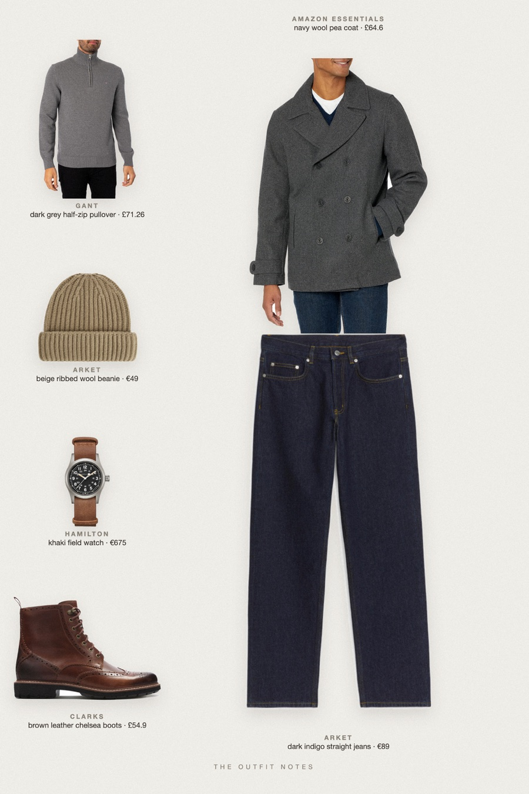
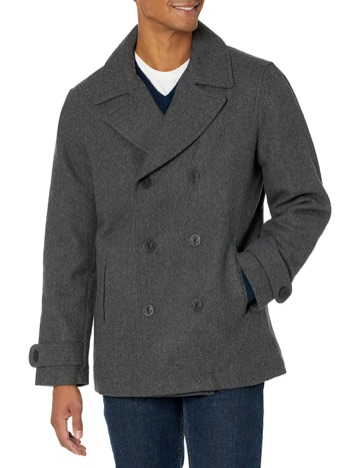
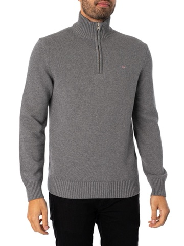
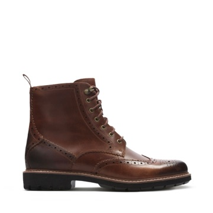
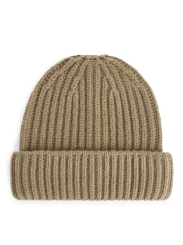

Game Day
pea coat, half zip and beanie

Cold weather football game outfit for men: a navy wool-blend pea coat over a GANT dark grey half-zip, dark indigo ARKET jeans, Clarks chelsea boots and a beige ribbed beanie. A Hamilton Khaki Field watch keeps it classy. Warm winter outfit men, casual and stylish for game day.
The pieces
This page contains affiliate links: if you buy through them, we may earn a commission at no extra cost to you. Disclosure.

Amazon Essentials
Navy wool pea coat
Shop
GANT
Dark grey half-zip pullover
Shop ARKET
ARKET
Dark indigo straight jeans
Shop
Clarks
Brown leather chelsea boots
Shop
ARKET
Beige ribbed wool beanie
Shop Hamilton
Hamilton
Khaki field watch
Shop
Prices are indicative, taken when the look was published, and may have changed. Pictures of the outfit are AI-generated illustrations of real products; the product photos are the retailers' own.
Published 2 October 2026.